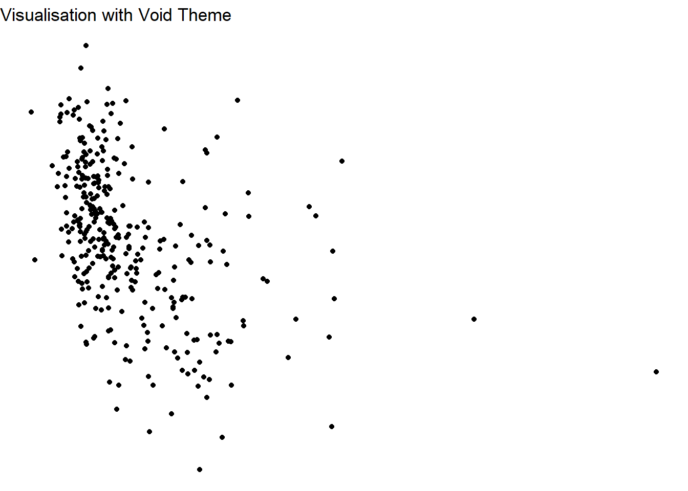
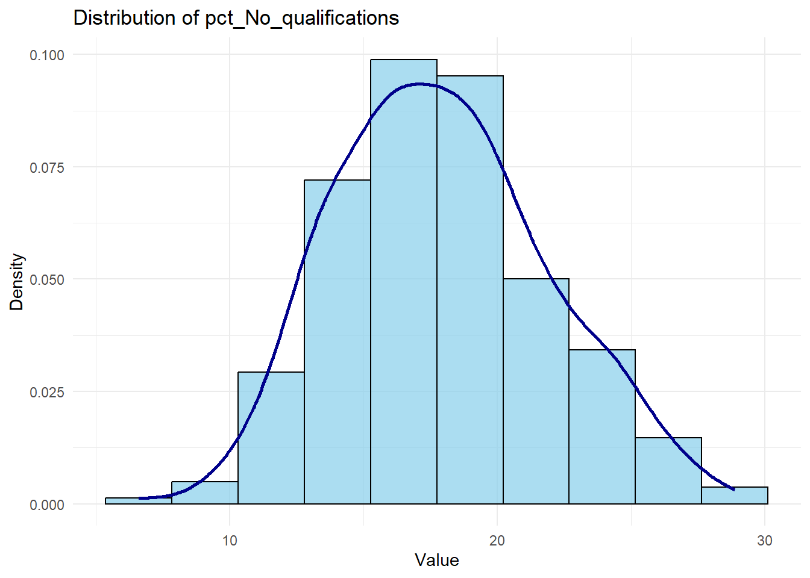
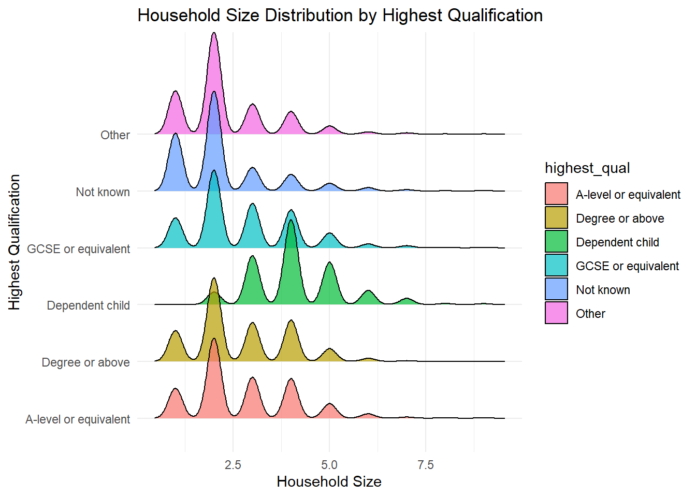

library(ggplot2)5 Lab: Data Visualisation with ggplot
5.1 Part A: Towards the Assignment (30 min, or till when you feel you are good to go)
- Identify a possible topic:
- Load your dataset(s) in Rstudio.
- Define your Research Question.
- Identify the related variables to analyse.
- Discuss ideas:
- Get feedback on feasibility and the clarity of research questions.
5.2 Part B - Visualisation: ggplot2 Functions and Arguments
For this session you need the following libraries:
install.packages(c("ggplot2", "dplyr", "tidyr", "kableExtra", "ggridges", "RColorBrewer", "broom", "scales", "reshape2"))
If necessary install them by moving the line into a code chunk.
The ggplot2 package in R is one of the most powerful tools for creating publication-quality visualizations. It uses a layered approach to building plots, starting with data, then adding mappings, geometries, and other components.
5.2.1 Basic Structure of ggplot2
A ggplot2 plot is built step by step:
ggplot(data, aes(x = <X-axis variable>, y = <Y-axis variable>, <other aesthetics>)) +
<geom_function()> +
<scales/themes/other layers>
5.2.2 Key Components
5.2.2.1 ggplot()
- Initializes the plotting system.
- Main arguments:
data: A data frame containing the variables to be plotted.aes(): Aesthetic mappings to connect data variables to visual properties likex,y,color,fill,size, etc.
Example:
Let’s load the data first:
census_data <- read.csv("../data/Census2021/EW_DistrictPercentages.csv")Plotting Number of residents vs age (mean).
ggplot(data = census_data, aes(x = Residents, y = mean_age)) +
geom_point()5.2.3 Geometries in ggplot2
You can plot the following geometries in ggplot:
| Geometry | Function | Use Case |
|---|---|---|
| Point | geom_point() |
Scatterplots |
| Line | geom_line() |
Line plots |
| Bar | geom_bar() |
Bar charts |
| Histogram | geom_histogram() |
Histograms |
| Boxplot | geom_boxplot() |
Boxplots |
| Density | geom_density() |
Density plots |
| Smooth | geom_smooth() |
Add regression or smoothing lines |
Example: Scatterplot with geom_point()
ggplot(census_data, aes(x = Residents, y = mean_age, color = factor(Region))) +
geom_point(size = 3)5.2.3.1 Aesthetics: aes()
- Maps data variables to visual properties.
- Common aesthetics:
x: X-axis variable.y: Y-axis variable.color: Changes point/line colors based on a variable.fill: Fills bars/areas based on a variable.size: Controls the size of points/lines.
Example: Adding color and size aesthetics
ggplot(census_data, aes(x = Residents, y = mean_age, color = factor(Region), size = pct_Very_bad_health)) +
geom_point()
What’s missing in the plot above?How can this be improved?
5.2.3.2 Faceting: facet_*
Faceting splits data into subsets and creates multiple small plots.
| Function | Description |
|---|---|
facet_wrap(~var) |
Wraps plots across rows/columns. |
facet_grid(row ~ col) |
Creates a grid layout for plots. |
ggplot(census_data, aes(x = Residents, y = mean_age)) +
geom_point() +
facet_wrap(~Region)What are the issues here?
5.2.3.3 Themes (theme_*)
Themes control the overall appearance of the plot.
| Function | Effect |
|---|---|
theme_minimal() |
Simple and clean theme. |
theme_classic() |
Classic-style plots. |
theme_dark() |
Dark background. |
theme_void() |
Minimal with no axes or grids. |
Applying a theme
ggplot(data = census_data, aes(x = Residents, y = mean_age)) +
geom_point() +
theme_void() +
labs(title = "Void Theme Example")
Is this any good?
5.2.3.4 Scales
Scales adjust color, size, and axis properties.
| Scale | Description |
|---|---|
scale_color_manual() |
Customizes colors for lines/points. |
scale_fill_brewer() |
Predefined color palettes for fills. |
scale_x_continuous() |
Modifies X-axis properties. |
scale_y_continuous() |
Modifies Y-axis properties. |
Example: Customizing axis and colors
library(RColorBrewer)
# Automatically determine the number of colors needed
num_levels <- length(unique(census_data$Region))
# Use an appropriate Brewer palette based on the number of levels
palette <- if (num_levels <= 8) "Set2" else "Paired" # Choose a palette with enough colorsThe RColorBrewer library provides pre-defined color palettes specifically designed for data visualization, ensuring clarity and accessibility. It includes sequential, diverging, and qualitative palettes suitable for various data types and visualization needs.
ggplot(census_data, aes(x = Residents, y = mean_age, color = factor(Region))) +
geom_point(size = 3) +
scale_color_brewer(palette = palette) + # Dynamically chosen palette
scale_x_continuous(breaks = seq(50, 350, 50)) +
labs(title = " Write a title") 
You can also create your own palette of colours.
ggplot(census_data, aes(x = Residents, y = mean_age, color = factor(Region))) +
geom_point(size = 3) +
scale_color_manual(values = c("red", "blue", "green", "purple", "orange", "pink", "brown", "yellow", "gray", "skyblue")) +
labs(
title = "Scatterplot of Residents vs Mean Age by Region",
x = "Residents",
y = "Mean Age",
color = "Region"
) +
theme_minimal()5.2.4 Additional Functions for Customization
labs(): Adds labels for axes, title, and legend.annotate(): Adds custom text or shapes to the plot.coord_flip(): Flips X and Y axes for horizontal plots.
Labeling:
# labels
labs(
title = "Plot Title",
x = "X-Axis Label",
y = "Y-Axis Label",
color = "Legend Title"
)$x
[1] "X-Axis Label"
$y
[1] "Y-Axis Label"
$colour
[1] "Legend Title"
$title
[1] "Plot Title"
attr(,"class")
[1] "labels"Annotations:
annotate("text", x = 100, y = 25, label = "Label", color = "red")mapping: x = ~x, y = ~y
geom_text: na.rm = FALSE
stat_identity: na.rm = FALSE
position_identity Flipping:
# flipping
ggplot(census_data, aes(x = factor(Region), y = Residents)) +
geom_boxplot() +
coord_flip() +
labs(title = "Horizontal Boxplot")Key Tips for ggplot2:
- Start with simple plots and incrementally add layers (
+). - Use themes (
theme_minimal(),theme_classic()) to clean up your plots. - Explore palettes with
RColorBrewerorviridisfor colorblind-friendly options.
5.3 Part C - Visualisation: Making decent graphs (1h)
This section demonstrates how to create publication-quality visualizations in R using ggplot2.
Learning goals Developing an understanding of, and ability to create academic standard data visualisations.
Let’s load the datasets first Check the paths, you may need to remove the “..”
frs_data <- read.csv("../data/FamilyResourceSurvey/FRS16-17_labels.csv")
census_data <- read.csv("../data/Census2021/EW_DistrictPercentages.csv")5.3.1 Different type of graphs.
5.3.1.1 Distribution of 1 Numerical variable:
Histogram
ggplot(census_data, aes(x = pct_Age_20_to_29)) +
geom_histogram(bins = 5, fill = "steelblue", color = "black") +
labs(title = "Distribution of Numerical Variable", x = "Variable", y = "Count") +
theme_minimal()
The bins parameter in a histogram determines the number of intervals (bins) into which the data range is divided. Each bin represents a range of values along the x-axis, and the height of each bar shows the count of observations within that range. For example, if bins = 5, the data is divided into five equal-width intervals. Using fewer bins results in a coarser view of the data, while more bins provide a finer, more detailed representation. However, too many bins can make the histogram appear cluttered and difficult to interpret. The width of each bin is automatically calculated by dividing the range of the data by the number of bins.
Density Plot
ggplot(census_data, aes(x = Residents)) +
geom_density(fill = "lightblue", alpha = 0.7) +
labs(title = "Residents, Density distribution", x = "Value", y = "Density") +
theme_minimal()Histogram + Density Distribution
# Plot histogram with density overlay for a chosen variable (e.g., 'pct_No_qualifications')
ggplot(census_data, aes(x = pct_No_qualifications)) +
geom_histogram(aes(y = after_stat(density)), bins = 10, color = "black", fill = "skyblue", alpha = 0.7) +
geom_density(color = "darkblue", linewidth = 1) +
labs(title = "Distribution of pct_No_qualifications", x = "Value", y = "Density") +
theme_minimal()
Box Plot
This looks kind of sad with just one variable, but it’s the best way, usually, to plot distributions for numerical variables.
library(scales) # For label_comma()
ggplot(census_data, aes(y = Residents)) +
geom_boxplot(fill = "lightgreen", color = "black") +
labs(title = "Residents Distribution", y = "Number of Residents") +
theme_minimal() +
scale_y_continuous(
limits = c(0, 500000),
labels = label_comma() # Properly placed within scale_y_continuous()
)Warning: Removed 9 rows containing non-finite outside the scale range
(`stat_boxplot()`).Notice the outliers. Outliers are data points that deviate significantly from the overall pattern of a dataset. They can arise due to measurement errors, variability in the data, or the presence of extreme values. Outliers can heavily influence statistical analyses, such as means or regression models, potentially leading to misleading conclusions. Identifying and addressing outliers is crucial to ensure robust and accurate results. Boxplots allow spotting them, along with interquartile range (IQR) analysis.
5.3.1.2 Distribution of 1 Categorical variable:
Bar Chart
ggplot(frs_data, aes(x = highest_qual)) +
geom_bar(fill = "skyblue", color = "black") +
labs(title = "Distribution of 1 Categorical Variable", x = "Highest Educational Qualification", y = "Count") +
theme_minimal()Horizontal Bar Chart
ggplot(frs_data, aes(x = highest_qual)) +
geom_bar(fill = "lightgreen", color = "black") +
labs(title = "Horizontal Bar Chart", x = "Highest Educational Qualification", y = "Count", ) +
coord_flip() + #just flipping
theme_minimal()5.3.1.3 Comparing variables
1 numerical, 1 categorical: Boxplot
ggplot(frs_data, aes(x = highest_qual, y = hh_size, fill = highest_qual)) +
geom_boxplot() +
labs(
title = "Household Size by Highest Educational Qualification",
x = "Highest Educational Qualification",
y = "Household Size"
) +
theme_minimal() +
theme(legend.position = "none") # don't need this1 numerical, 1 categorical: Density Ridges
library(ggridges) # need a library for thisWarning: package 'ggridges' was built under R version 4.4.2ggplot(frs_data, aes(x = hh_size, y = highest_qual, fill = highest_qual)) +
geom_density_ridges(alpha = 0.7) +
labs(
title = "Household Size Distribution by Highest Qualification",
x = "Household Size",
y = "Highest Qualification"
) +
theme_minimal()Picking joint bandwidth of 0.18
2 Categorical Variables: Stacked Bar Chart
Note the adjustments made for making the labels look better
ggplot(frs_data, aes(x = highest_qual, fill = health)) +
geom_bar(position = "stack") +
labs(
title = "Health Status by Highest Qualification",
x = "Highest Qualification",
y = "Count of Individuals",
fill = "Health Status"
) +
theme_minimal() +
theme(
axis.text.x = element_text(angle = 45, hjust = 1), # Rotate X-axis labels for readability
legend.title = element_text(size = 12), # Adjust legend title size
legend.text = element_text(size = 10) # Adjust legend text size
)Side-by-Side Bar Chart (Two-Way Frequency Distribution)
This type of chart can get messy.
ggplot(frs_data, aes(x = health, fill = highest_qual)) +
geom_bar(position = "dodge") +
labs(
title = "Health Status by Highest Qualification",
x = "Highest Qualification",
y = "Count of Individuals",
fill = "Health Status"
) +
theme_minimal() +
theme(
axis.text.x = element_text(angle = 45, hjust = 1),
legend.title = element_text(size = 12),
legend.text = element_text(size = 10)
)2 Categorical Variable counts to percentages: Stacked Percentage Graph
One can also convert the counts of two categorical variables to percentages. In this case, we aim to visualise the proportional distribution of one categorical variable (health) across levels of another categorical variable (highest_qual) using a stacked percentage bar chart. First, we create a cross-tabulation to count the occurrences of each combination of Health and Qualification categories. These counts are then converted into a percentage format relative to the total counts for each Qualification category. This transformation allows us to represent the relative proportions rather than absolute counts, facilitating comparison across categories.
# Create a cross-tabulation of observed counts
cross_tab <- table(frs_data$health, frs_data$highest_qual)
# Convert the cross-tabulation to a data frame
cross_tab_df <- as.data.frame(cross_tab)
colnames(cross_tab_df) <- c("Health", "Qualification", "Percentage")The data is reshaped into a data frame for compatibility with ggplot2, where a stacked bar chart with percentage scaling (position = "fill") is generated. The result is a plot that shows how Health statuses are distributed proportionally within each Qualification level.
# Create a stacked percentage bar chart
ggplot(cross_tab_df, aes(x = Qualification, y = Percentage, fill = Health)) +
geom_bar(stat = "identity", position = "fill") +
scale_y_continuous(labels = scales::percent_format()) +
labs(
title = "Health by Highest Qualification (Percentage)",
x = "Highest Qualification",
y = "Percentage",
fill = "Health Status"
) +
theme_minimal() +
theme(axis.text.x = element_text(angle = 45, hjust = 1))3+ Numerical Variables: Boxplot
To compare three numerical variables using boxplots in ggplot2, one needs to reshape the data to a long format so that each numerical variable is treated as a category in a single column.
Here’s how you can do it, using tidyverse
library(tidyverse) # we need tidyverse for this── Attaching core tidyverse packages ──────────────────────── tidyverse 2.0.0 ──
✔ dplyr 1.1.4 ✔ readr 2.1.5
✔ forcats 1.0.0 ✔ stringr 1.5.1
✔ lubridate 1.9.3 ✔ tibble 3.2.1
✔ purrr 1.0.2 ✔ tidyr 1.3.1
── Conflicts ────────────────────────────────────────── tidyverse_conflicts() ──
✖ readr::col_factor() masks scales::col_factor()
✖ purrr::discard() masks scales::discard()
✖ dplyr::filter() masks stats::filter()
✖ dplyr::lag() masks stats::lag()
ℹ Use the conflicted package (<http://conflicted.r-lib.org/>) to force all conflicts to become errors# Reshape the data into long format
long_data <- census_data %>%
pivot_longer(
cols = c(pct_Single, pct_Muslim, pct_Married_opposite_sex_couple),
names_to = "Variable",
values_to = "Value"
)The code above reshapes the data from a wide format to a long format using the pivot_longer() function from the tidyverse package. In the original dataset, each column represents a separate variable (e.g., pct_Single, pct_Muslim, ..), and their values are stored in individual columns. The transformation collapses these columns into two new columns: one for the variable names (Variable) and another for their corresponding values (Value). This format is useful for plotting or analysis where variables are treated uniformly, such as when creating boxplots or facet grids in ggplot2.
# Create the boxplot
ggplot(long_data, aes(x = Variable, y = Value, fill = Variable)) +
geom_boxplot() +
labs(
title = "Comparison of Three Numerical Variables",
x = "Variable",
y = "Value"
) +
theme_minimal() +
theme(legend.position = "none")5.3.1.4 Visualising Relationships:
2 Numerical Variables: Scatterplot
ggplot(census_data, aes(x = pct_Single, y = pct_Muslim, color = factor(Country))) +
geom_point(size = 3, alpha = 0.7) +
labs(
title = "Percentage of Single Population vs Muslim Population by Country",
x = "Percentage of Single Population",
y = "Percentage of Muslim Population",
color = "Country"
) +
theme_minimal()2 Numerical Variables + 1 Catecorical: Scatterplot
ggplot(census_data, aes(x = pct_Single, y = pct_Muslim, color = factor(Region))) +
geom_point(size = 3, alpha = 0.7) +
labs(
title = "Percentage of Single Population vs Muslim Population by Region",
x = "Percentage of Single Population",
y = "Percentage of Muslim Population",
color = "Region"
) +
theme_minimal()3+ Numerical Variables: Correlogram
First we need to create a correlation matrix with reshape2
library(reshape2)Warning: package 'reshape2' was built under R version 4.4.2
Attaching package: 'reshape2'The following object is masked from 'package:tidyr':
smiths# Calculate the correlation matrix
cor_matrix <- cor(
census_data[, c("pct_Males", "pct_Single", "pct_Bad_health")], # you can add more variables here
use = "complete.obs"
)
# Convert the correlation matrix into a format suitable for ggplot2
cor_data <- melt(cor_matrix)# Plot the correlogram
ggplot(data = cor_data, aes(x = Var1, y = Var2, fill = value)) +
geom_tile(color = "white") + # Create the heatmap
geom_text(aes(label = sprintf("%.2f", value)), color = "black", size = 4) + # Add correlation values
scale_fill_gradient2(
low = "blue", high = "red", mid = "white",
midpoint = 0, limit = c(-1, 1),
space = "Lab", name = "Correlation"
) +
labs(
title = "Correlogram of Demographic Variables",
subtitle = "Pct Male, Single, and Bad Health",
x = "",
y = ""
) +
theme_minimal() +
theme(
axis.text.x = element_text(angle = 45, vjust = 1, hjust = 1),
axis.text.y = element_text(size = 10),
legend.position = "bottom"
)3+ Numerical Variables: Scatterplot matrix
Preparation:
# Select the variables
selected_vars <- census_data[, c("pct_Males", "pct_Single", "pct_Bad_health")]
# Create pairwise combinations of variable names
scatter_data <- expand.grid(
Variable1 = names(selected_vars),
Variable2 = names(selected_vars)
) %>%
filter(Variable1 != Variable2) # Remove self-comparisons
# Add the data values for the pairs
scatter_data <- scatter_data %>%
rowwise() %>%
mutate(
Value1 = list(selected_vars[[Variable1]]), # Extract values for Variable1
Value2 = list(selected_vars[[Variable2]]) # Extract values for Variable2
) %>%
unnest(c(Value1, Value2)) # Unnest the lists into rowsThis code is used to create a dataset that facilitates generating pairwise scatterplots between selected variables from a dataset. First, it selects the variables of interest (pct_Males, pct_Single, and pct_Bad_health) from the census_data dataset and stores them in a new data frame called selected_vars. Then, the expand.grid() function is used to generate all possible combinations of these variables, resulting in a data frame with two columns, Variable1 and Variable2, where each row represents a pair of variables (e.g., pct_Males vs pct_Single). To avoid redundant self-comparisons (e.g., pct_Males vs pct_Males), the code filters out such rows using filter(Variable1 != Variable2). Finally, the mutate() function is applied to map the actual values of the paired variables (Variable1 and Variable2) to two new columns, Value1 and Value2. These columns contain the corresponding data points for the variable pair, enabling the creation of scatterplots where Value1 is plotted against Value2 for each combination.
Visualisation:
ggplot(scatter_data, aes(x = Value1, y = Value2)) +
geom_point(alpha = 0.6, color = "blue") +
facet_grid(Variable1 ~ Variable2, scales = "free") +
labs(
title = "Correlation Matrix",
x = "",
y = ""
) +
theme_minimal()5.4 Part D: Publication-Ready Tables with kableExtra
Kable extra allows you creating nice formatted tables for a series of ouputs in Rstudio:
library(kableExtra)Warning: package 'kableExtra' was built under R version 4.4.2
Attaching package: 'kableExtra'The following object is masked from 'package:dplyr':
group_rows5.4.1 Summarising datasets
First we select some columns and we get relevant descriptive statistics.
summary_data <- census_data %>%
select(pct_Very_bad_health, pct_No_qualifications, pct_Males, pct_Higher_manager_prof) %>%
summarise_all(list(mean = mean, sd = sd)) %>%
rename_with(~ paste0(., c("_mean", "_sd")), everything()) # Rename columns with "_mean" and "_sd"Then, we create a table with kableExtra
reshaped_data <- summary_data %>%
pivot_longer(
cols = everything(),
names_to = c("Variable", ".value"),
names_sep = "_"
)
# Step 3: Create a styled table using kableExtra
reshaped_data %>%
kbl(
caption = "Summary Statistics for Selected Variables",
col.names = c("Variable", "Mean", "Standard Deviation"),
digits = 3
) %>%
kable_styling(
full_width = FALSE,
bootstrap_options = c("striped", "hover", "condensed")
)5.4.2 Creating a Well-Formatted Table from a Cross Tabulation
We can also convert a basic cross tabulation to a nice table
# cross tabulation
cross_tab <- table(frs_data$health, frs_data$highest_qual)
# Convert the cross-tabulation to a data frame
cross_tab_df <- as.data.frame(cross_tab)colnames(cross_tab_df) <- c("Health", "Qualification", "Percentage")
cross_tab_df %>%
kbl(caption = "Health and Educational Qualification") %>%
kable_styling(full_width = FALSE, position = "left") %>%
add_header_above(c(" " = 1, "Highest Educational Qualification" = 2))| Health | Qualification | Percentage |
|---|---|---|
| Bad | A-level or equivalent | 200 |
| Fair | A-level or equivalent | 868 |
| Good | A-level or equivalent | 1626 |
| Not known | A-level or equivalent | 1163 |
| Very Bad | A-level or equivalent | 55 |
| Very Good | A-level or equivalent | 1348 |
| Bad | Degree or above | 262 |
| Fair | Degree or above | 1097 |
| Good | Degree or above | 2953 |
| Not known | Degree or above | 1923 |
| Very Bad | Degree or above | 67 |
| Very Good | Degree or above | 2854 |
| Bad | Dependent child | 22 |
| Fair | Dependent child | 67 |
| Good | Dependent child | 342 |
| Not known | Dependent child | 9100 |
| Very Bad | Dependent child | 7 |
| Very Good | Dependent child | 760 |
| Bad | GCSE or equivalent | 524 |
| Fair | GCSE or equivalent | 1785 |
| Good | GCSE or equivalent | 3061 |
| Not known | GCSE or equivalent | 2165 |
| Very Bad | GCSE or equivalent | 133 |
| Very Good | GCSE or equivalent | 2061 |
| Bad | Not known | 841 |
| Fair | Not known | 1804 |
| Good | Not known | 1674 |
| Not known | Not known | 1447 |
| Very Bad | Not known | 279 |
| Very Good | Not known | 775 |
| Bad | Other | 231 |
| Fair | Other | 696 |
| Good | Other | 854 |
| Not known | Other | 587 |
| Very Bad | Other | 64 |
| Very Good | Other | 450 |
5.4.3 Creating a Well-Formatted Table from a Cross Tabulation
Finally, we can derive a table to show the Multiple Linear Regression results.
# Load required libraries
library(broom)
# Fit the regression model
model <- lm(pct_Very_bad_health ~ pct_No_qualifications + pct_Males + pct_Higher_manager_prof,
data = census_data)# Tidy the regression output
regression_table <- tidy(model) %>%
select(term, estimate, std.error, statistic, p.value) %>%
rename(
Term = term,
Estimate = estimate,
`Std. Error` = std.error,
`t value` = statistic,
`P value` = p.value
)Create and style the regression table
regression_table %>%
kbl(
caption = "Regression Results: Predicting Very Bad Health Percentage",
digits = 3,
col.names = c("Term", "Estimate", "Std. Error", "t Value", "P Value")
) %>%
kable_styling(full_width = FALSE, bootstrap_options = c("striped", "hover", "condensed")) %>%
column_spec(2:5, width = "3cm") %>% # Adjust column widths
add_header_above(c(" " = 1, "Coefficients" = 4)) # Add grouped header| Term | Estimate | Std. Error | t Value | P Value |
|---|---|---|---|---|
| (Intercept) | 4.003 | 0.880 | 4.550 | 0.000 |
| pct_No_qualifications | 0.053 | 0.006 | 8.937 | 0.000 |
| pct_Males | -0.074 | 0.018 | -4.121 | 0.000 |
| pct_Higher_manager_prof | -0.013 | 0.005 | -2.670 | 0.008 |
5.5 Part E: Play with the code
Test the code with other variables and perhaps your own dataset. Change colours, labels and try to understand what the functions mean.